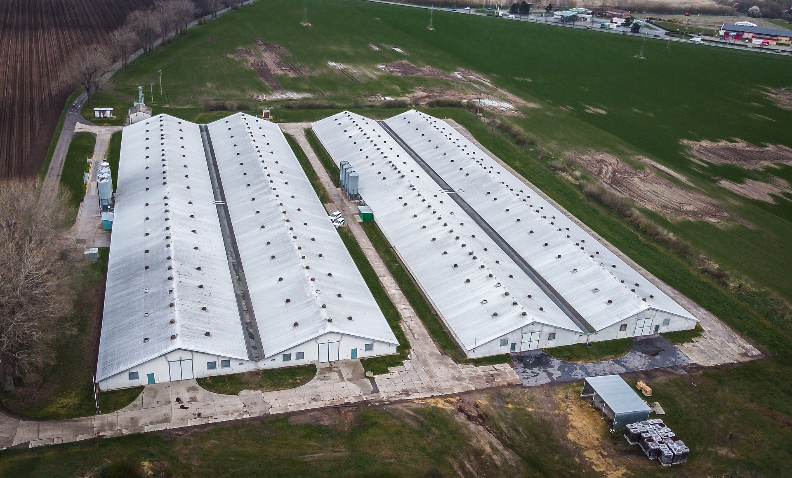
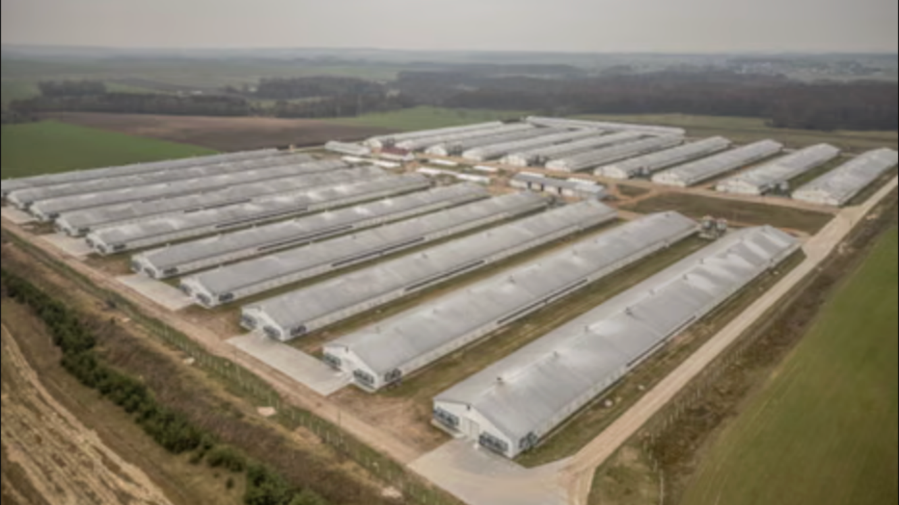
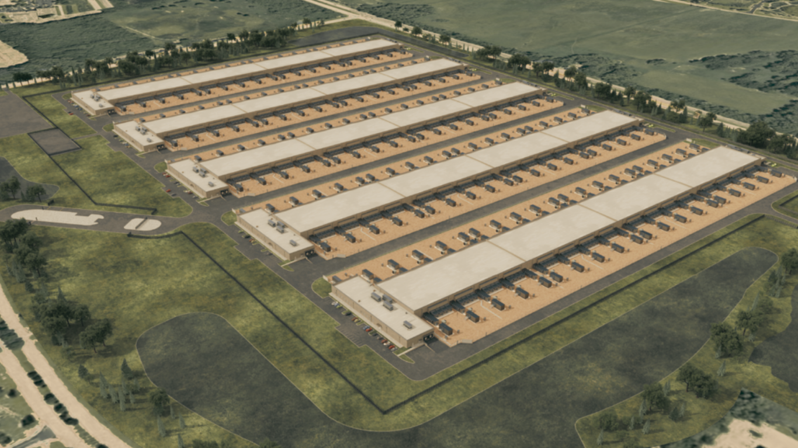
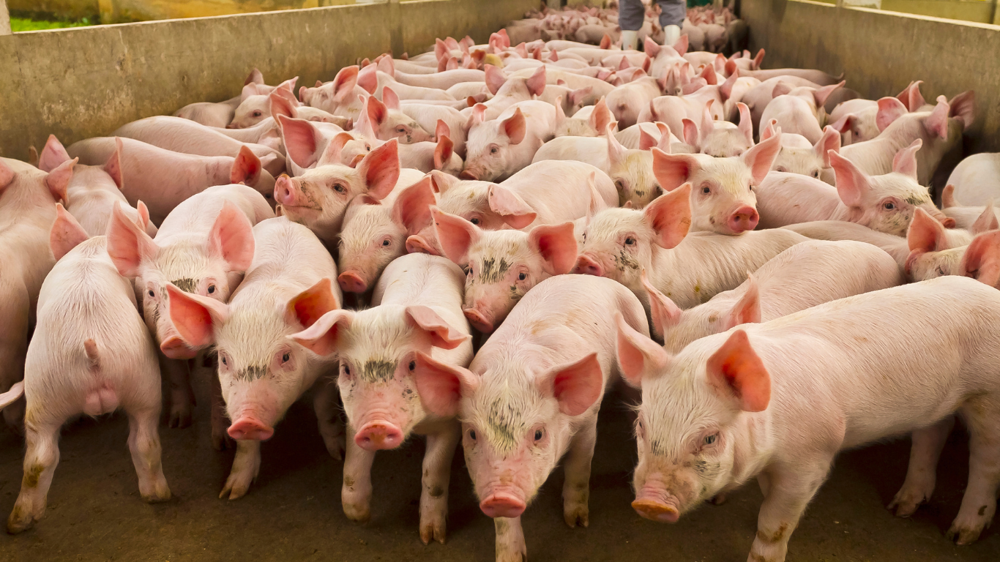
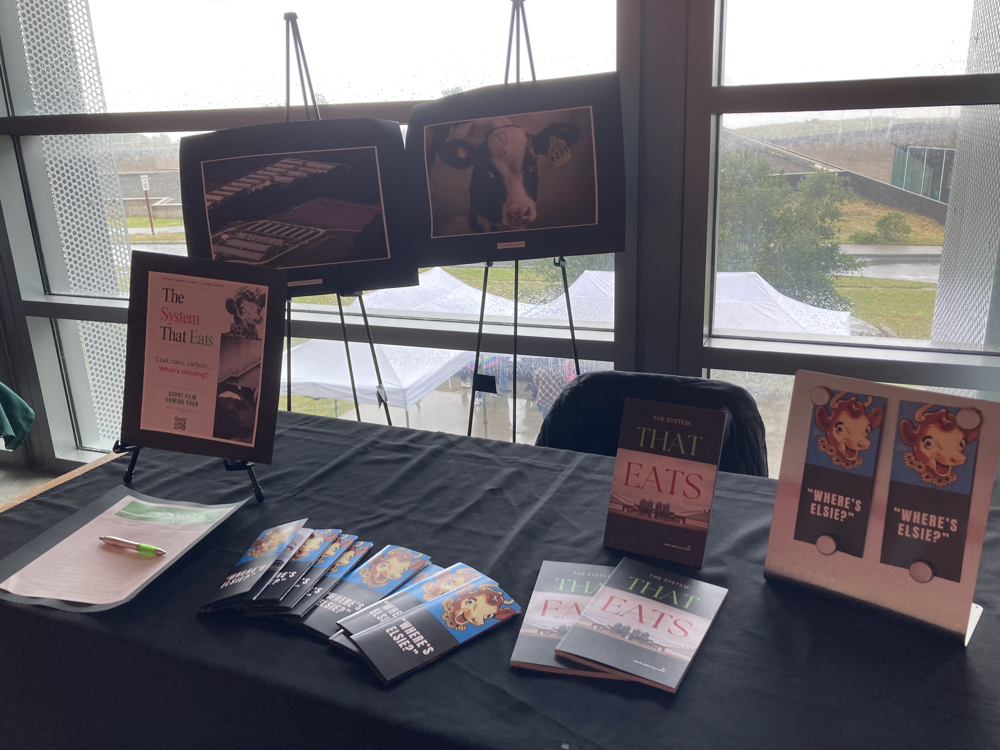
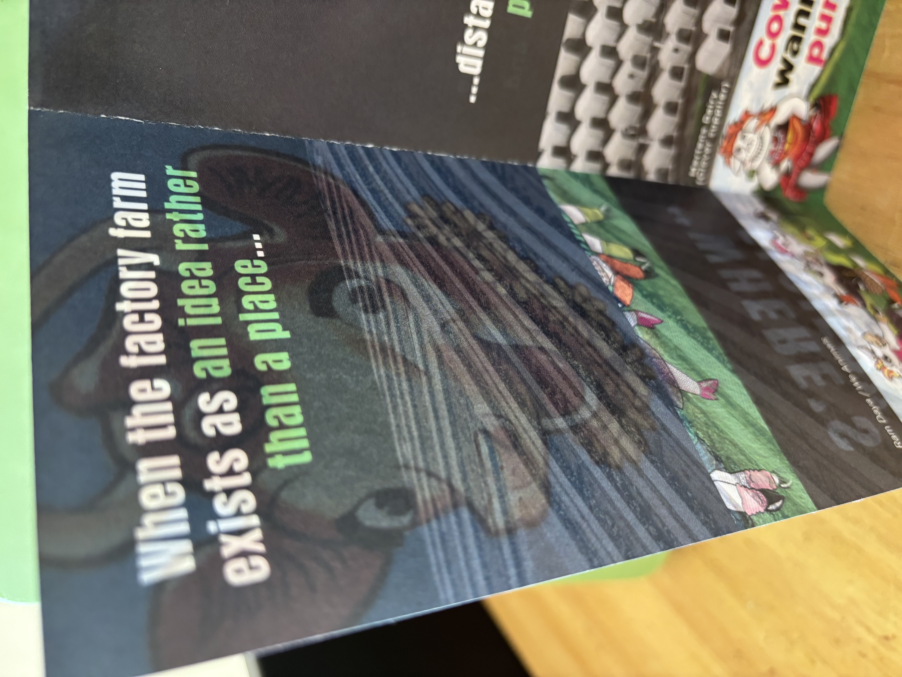
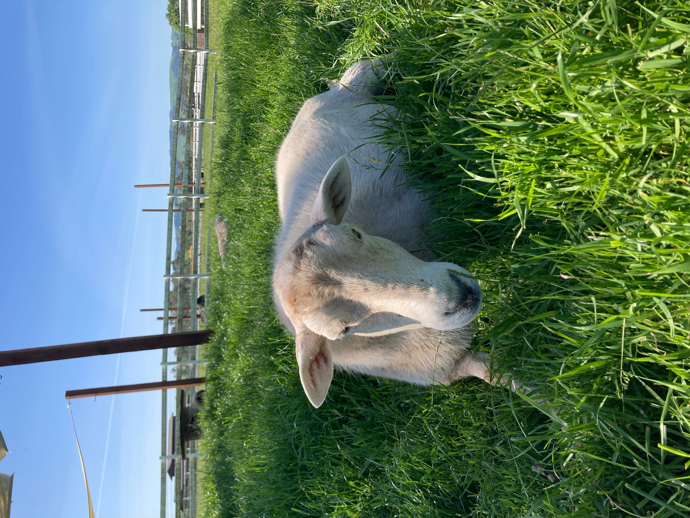

The System That Eats: Animal Information
A System That Eats project on factory farms, data centers, and life in numbers.


A System That Eats project on factory farms, data centers, and life in numbers.



From Above.
Which image is the factory farm?
Left imageOne is filled with information.
The other is filled with breathing, sensing animal life.
That, too, is information.

This installation builds on The System That Eats, a framework developed for looking at an industry that does not want to be seen.


The System That Eats (TSTE) looks at Representation, Concealment, Externalized Costs, and Moments Where The System Cannot Hold. TSTE: Animal Information asks us to expand on the growing awareness of data center harms to explore other implicated industrial systems: namely, factory farms.


Visitors receive an I SPY checklist, example below:
Now look again.
Finally, through multimedia materials including original farm animal sanctuary photography, TSTE: Animal Information asks us to look at animal life.
What does it mean for some animal sights and sounds to be seen, heard, and even treasured (for example, songbirds, deer, wild turkeys, squirrels) while others remain absent, cloaked in industrial silence?
How does this absence allow these animals to become data points on the page of an industrial spreadsheet?


Animal photos taken at Charlie's Acres Farm Animal Sanctuary. Additional sources: Hugh Kenny via Piedmont Environmental Council (data center).